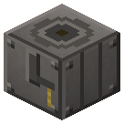
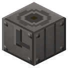
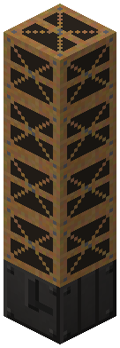
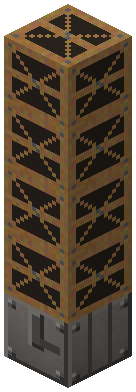
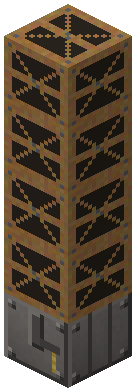

Нефтяная скважина


Над устьем - буровая вышка, от 4 блоков столбом.
Над устьем - буровая вышка, от 4 блоков столбом. Бурение: 20 м на 1 обсадную трубу + 250 mB воды, привод - вал (6 л.с.) или пар. Пласт на 150-1500 м: нефть, вода (сухая) или ловушки нет. Дальше фонтан сам, иссяк - качалка (вал 4 л.с. или пар). Газ - в бак, полон - на факел.
Параметры
| Эпоха | 2 — Пар и механика |
|---|---|
| Многоблок | да: буровая вышка (derrick) столбом |
| Привод | вал, пар |
| Баки, mB | 8000, 8000, 16000, 8000 |
| что делает | бурение -> фонтан -> качалка; попутный газ |
| энергия на входе | вал 6/4 или пар 400 mB |
| из чего | стальные шестерня и листы, стальные трубы |
| л.с. | 6 бурение / 4 качалка |
Числа
| скважина: метров бурения на обсадную трубу | 20 м |
|---|---|
| скважина: партия бурения | 200 тик |
| скважина: вода (буровой раствор) на партию | 250 mB |
Кто кормит
- steam ← Парогенератор АЭС
- вал ← Паровая машина, Паровая машина высокого давления (трансмиссия)
Кого кормит
- Нефтяной газ → Химический реактор, Реактор высокого давления
- oil → Реактор высокого давления, Атмосферная колонна (печь Шухова)
Как устроено (из кода)
Нефтяная скважина (Дрейк, Пенсильвания, 1859): устье с буровым станком; над ним - буровая вышка (DERRICK_MIN блоков derrick столбом). Бурение партиями по STEP м: 1 обсадная труба + MUD mB воды (буровой раствор) + привод - вал (drillHp л.с.) или свой пар DRILL_STEAM. Дошли до кровли пласта (Oil.Deposit.depth) - нефть или сухая скважина (вода в ловушке, пласт выбран соседями, ловушки нет - до MAX_DEPTH). Вышку после бурения можно снять. Добыча: фонтан на пластовом давлении (Oil.natural) без привода; иссяк - станок-качалка (Oil.pumped) от вала pumpHp л.с. или пара PUMP_STEAM. Попутный газ - в бак 3, бак полон - сжигается на факеле. Слоты: 0 обсадные трубы. Баки: 0 вода, 1 пар, 2 нефть (выход), 3 газ (выход).
Сборка
Вышку после бурения можно снять — дальше фонтан или качалка.

Устье с буровым станком.

Буровая вышка над устьем — от 4 блоков столбом. Привод — вал или свой пар.


Бледное — поставлено на прошлых шагах.